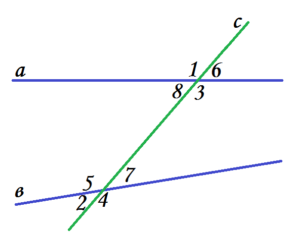
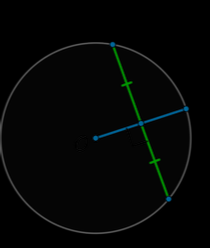
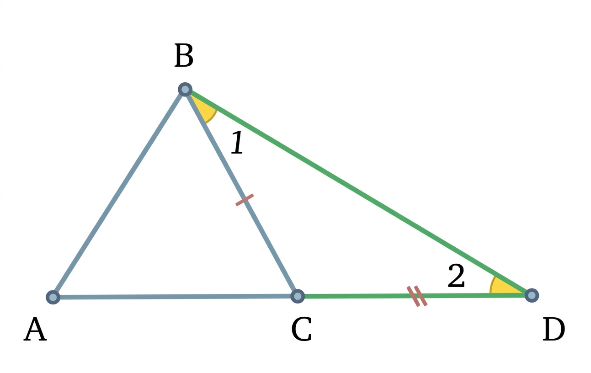

Углы
Теорема: Два угла называются смежными, если у них общая вершина и одна общая сторона, а две другие стороны являются продолжением друг друга. Такие углы всегда дополняют друг друга до развёрнутого угла, поэтому их сумма равна 180°.
| Шаг | Утверждение |
|---|---|
| Дано | Луч OC делит развёрнутый угол AOB на ∠AOC и ∠COB |
| Факт | Развёрнутый угол AOB = 180° |
| Вывод | ∠AOC + ∠COB = 180° ∎ |

Теорема: Два угла называются вертикальными, если стороны одного являются продолжением сторон другого. При пересечении двух прямых образуются две пары вертикальных углов, и каждая пара обязательно равна между собой.
| Шаг | Утверждение |
|---|---|
| Дано | ∠1 и ∠2 — смежные, ∠3 и ∠2 — смежные |
| Шаг 1 | ∠1 + ∠2 = 180° и ∠3 + ∠2 = 180° |
| Вывод | ∠1 = 180° − ∠2 = ∠3 ∎ |

Теорема: Если две прямые перпендикулярны одной и той же третьей прямой (секущей), то они параллельны между собой. Это следует из того, что все соответственные углы при таком пересечении равны 90°.
| Шаг | Утверждение |
|---|---|
| Дано | a ⊥ c и b ⊥ c |
| Шаг 1 | Соответственные углы при a и c: 90°; при b и c: 90° |
| Вывод | Равные соответственные углы — признак параллельности ∎ |

Треугольники
Теорема: Если две стороны и угол между ними одного треугольника соответственно равны двум сторонам и углу между ними другого треугольника, то такие треугольники конгруэнтны, то есть полностью совпадают при наложении.
| Шаг | Утверждение |
|---|---|
| Дано | AB = A₁B₁, ∠B = ∠B₁, BC = B₁C₁ |
| Шаг 1 | Наложим △A₁B₁C₁ на △ABC, совместив B и B₁ |
| Шаг 2 | Т.к. равны стороны и угол — вершины A и C совпадут |
| Вывод | Треугольники полностью совпали ∎ |

Теорема: Если сторона и два угла, прилежащих к ней, одного треугольника соответственно равны стороне и двум прилежащим углам другого треугольника, то такие треугольники равны.
| Шаг | Утверждение |
|---|---|
| Дано | ∠A = ∠A₁, AB = A₁B₁, ∠B = ∠B₁ |
| Шаг 1 | Совместим стороны AB и A₁B₁ |
| Шаг 2 | Лучи из A и B идут под равными углами — пересекутся в одной точке C = C₁ |
| Вывод | Треугольники совпали ∎ |

Теорема: Если все три стороны одного треугольника соответственно равны трём сторонам другого треугольника, то такие треугольники равны. Форма треугольника полностью определяется его сторонами.
| Шаг | Утверждение |
|---|---|
| Дано | Все три стороны попарно равны |
| Шаг 1 | Совместим сторону BC = B₁C₁ |
| Шаг 2 | Из двух условий равенства радиусов вершина A совпадёт с A₁ |
| Вывод | Треугольники совпали ∎ |

Свойство: В равнобедренном треугольнике углы при основании равны. Это означает, что если два боковых ребра треугольника равны, то и углы, лежащие напротив этих рёбер, тоже равны.
| Шаг | Утверждение |
|---|---|
| Дано | △ABC, AB = AC |
| Шаг 1 | Проведём биссектрису AM из вершины A |
| Шаг 2 | По признаку СУС: △ABM = △ACM |
| Вывод | ∠B = ∠C ∎ |

Теорема: В равнобедренном треугольнике медиана, проведённая к основанию, одновременно является биссектрисой угла при вершине и высотой треугольника. Все три линии совпадают.
| Шаг | Утверждение |
|---|---|
| Дано | △ABC, AB = AC, M — середина BC |
| Шаг 1 | По признаку ССС: △ABM = △ACM |
| Шаг 2 | ∠BAM = ∠CAM → AM — биссектриса |
| Вывод | ∠AMB = ∠AMC = 90° → AM — высота ∎ |

Теорема: Каждая сторона треугольника строго меньше суммы двух других его сторон. Это ключевое условие существования треугольника: если оно нарушается хотя бы для одной стороны, треугольник построить невозможно.
| Шаг | Утверждение |
|---|---|
| Дано | △ABC со сторонами a, b, c |
| Шаг 1 | Продолжим AC за A на отрезок AD = AB |
| Шаг 2 | DC = AB + AC = c + b; в △DBC: BC < DC |
| Вывод | a < b + c ∎ |

Параллельные прямые
Признак: Если при пересечении двух прямых секущей накрест лежащие углы равны, то прямые параллельны. Накрест лежащие углы находятся по разные стороны от секущей и между прямыми.
| Шаг | Утверждение |
|---|---|
| Дано | ∠3 = ∠6 (накрест лежащие) |
| Шаг 1 | ∠3 = ∠5 (вертикальные) → ∠5 = ∠6 |
| Вывод | ∠5 = ∠6 — соответственные равны → a ∥ b ∎ |

Признак: Если при пересечении двух прямых секущей соответственные углы равны, то прямые параллельны. Соответственные углы занимают одинаковое положение относительно каждой из двух прямых и секущей.
| Шаг | Утверждение |
|---|---|
| Дано | ∠1 = ∠5 (соответственные) |
| Шаг 1 | Прямые одинаково наклонены к секущей |
| Вывод | Не пересекаются → параллельны ∎ |

Признак: Если при пересечении двух прямых секущей сумма односторонних (внутренних) углов равна 180°, то прямые параллельны. Односторонние углы лежат по одну сторону от секущей.
| Шаг | Утверждение |
|---|---|
| Дано | ∠4 + ∠6 = 180° |
| Шаг 1 | ∠3 + ∠4 = 180° → ∠3 = ∠6 (накрест лежащие равны) |
| Вывод | По признаку накрест лежащих: a ∥ b ∎ |
Аксиома параллельных прямых: Через точку, не лежащую на данной прямой, проходит одна и только одна прямая, параллельная данной. Это фундамент евклидовой геометрии, принимаемый без доказательства.
| Шаг | Утверждение |
|---|---|
| Статус | Аксиома — принимается без доказательства |
| Значение | Основа всей евклидовой геометрии |
| Следствие | В неевклидовых геометриях эта аксиома нарушается |

Теорема: Сумма внутренних углов любого треугольника равна 180°. Это одно из фундаментальных свойств евклидовой геометрии, из которого вытекает множество других теорем.
| Шаг | Утверждение |
|---|---|
| Дано | △ABC |
| Шаг 1 | Через B проведём прямую DE ∥ AC |
| Шаг 2 | ∠ABD = ∠A (накрест), ∠CBE = ∠C (накрест) |
| Вывод | ∠A + ∠B + ∠C = 180° (развёрнутый угол) ∎ |

Прямоугольные △
Теорема: В прямоугольном треугольнике сумма двух острых углов равна 90°. Это непосредственно следует из теоремы о сумме углов треугольника, поскольку один из углов уже равен 90°.
| Шаг | Утверждение |
|---|---|
| Дано | △ABC, ∠C = 90° |
| Шаг 1 | ∠A + ∠B + ∠C = 180° (сумма углов △) |
| Вывод | ∠A + ∠B = 180° − 90° = 90° ∎ |

Теорема: В прямоугольном треугольнике катет, лежащий напротив угла в 30°, равен половине гипотенузы. Это частный, но очень удобный случай для вычислений в задачах.
| Шаг | Утверждение |
|---|---|
| Дано | △ABC, ∠C = 90°, ∠A = 30° |
| Шаг 1 | Отразим △ABC относительно BC — получим равносторонний △ |
| Шаг 2 | Все стороны равностороннего △ равны AB |
| Вывод | BC = AB/2 = гипотенуза/2 ∎ |

Признак равенства прямоугольных треугольников: Если гипотенуза и катет одного прямоугольного треугольника соответственно равны гипотенузе и катету другого, то такие треугольники равны.
| Шаг | Утверждение |
|---|---|
| Дано | Равные гипотенузы и по одному катету |
| Шаг 1 | По т. Пифагора найдём второй катет: он тоже равен |
| Вывод | Три стороны равны → по признаку ССС △ = △ ∎ |

Окружность
Теорема: Касательная к окружности, проведённая в некоторую точку окружности, перпендикулярна радиусу, проведённому в эту же точку касания. Обратное тоже верно.
| Шаг | Утверждение |
|---|---|
| Дано | Прямая l касается окружности в точке A |
| Шаг 1 | Любая точка l кроме A лежит вне окружности → дальше от O |
| Вывод | OA — наикратчайшее расстояние от O до l → OA ⊥ l ∎ |

Теорема: Два отрезка касательных, проведённых к окружности из одной внешней точки, равны между собой. Кроме того, эта точка лежит на биссектрисе угла, образованного касательными.
| Шаг | Утверждение |
|---|---|
| Дано | PA и PB — касательные, O — центр |
| Шаг 1 | OA = OB (радиусы), OA ⊥ PA, OB ⊥ PB, OP — общая |
| Вывод | По признаку Г и К: △OAP = △OBP → PA = PB ∎ |

Теорема: Диаметр окружности, перпендикулярный хорде, делит эту хорду пополам. Обратно: если диаметр делит хорду пополам, то он перпендикулярен ей (если только хорда не является самим диаметром).
| Шаг | Утверждение |
|---|---|
| Дано | Диаметр CD ⊥ хорде AB, M — пересечение |
| Шаг 1 | OA = OB (радиусы), OM — общий, ∠OMA = ∠OMB = 90° |
| Вывод | По признаку Г и К: △OMA = △OMB → AM = BM ∎ |

Разное
Теорема: Внешний угол треугольника равен сумме двух внутренних углов, не смежных с ним. Из этого немедленно следует, что внешний угол всегда больше каждого из несмежных внутренних углов.
| Шаг | Утверждение |
|---|---|
| Дано | △ABC, ∠ACD — внешний угол при вершине C |
| Шаг 1 | ∠ACB + ∠ACD = 180° (смежные) |
| Шаг 2 | ∠A + ∠B + ∠ACB = 180° (сумма углов △) |
| Вывод | ∠ACD = ∠A + ∠B ∎ |

Теорема: В треугольнике против большей стороны лежит больший угол, и обратно — против большего угла лежит большая сторона. Это позволяет сравнивать стороны и углы без вычислений.
| Шаг | Утверждение |
|---|---|
| Дано | △ABC, пусть BC > AC |
| Шаг 1 | Отложим на BC отрезок BD = AC, рассмотрим △ABD |
| Шаг 2 | ∠DAB = ∠ADB > ∠ACB (внешний угол) |
| Вывод | ∠ABC > ∠DAB = ∠ACB → ∠B > ∠A ∎ |

Теорема: В прямоугольном треугольнике медиана, проведённая к гипотенузе, равна половине гипотенузы. Это означает, что середина гипотенузы является центром описанной окружности.
| Шаг | Утверждение |
|---|---|
| Дано | △ABC, ∠C = 90°, M — середина гипотенузы AB |
| Шаг 1 | Опишем △ в полуокружность с диаметром AB |
| Шаг 2 | Центр окружности — точка M, радиус R = AB/2 |
| Вывод | MA = MB = MC = AB/2 ∎ |